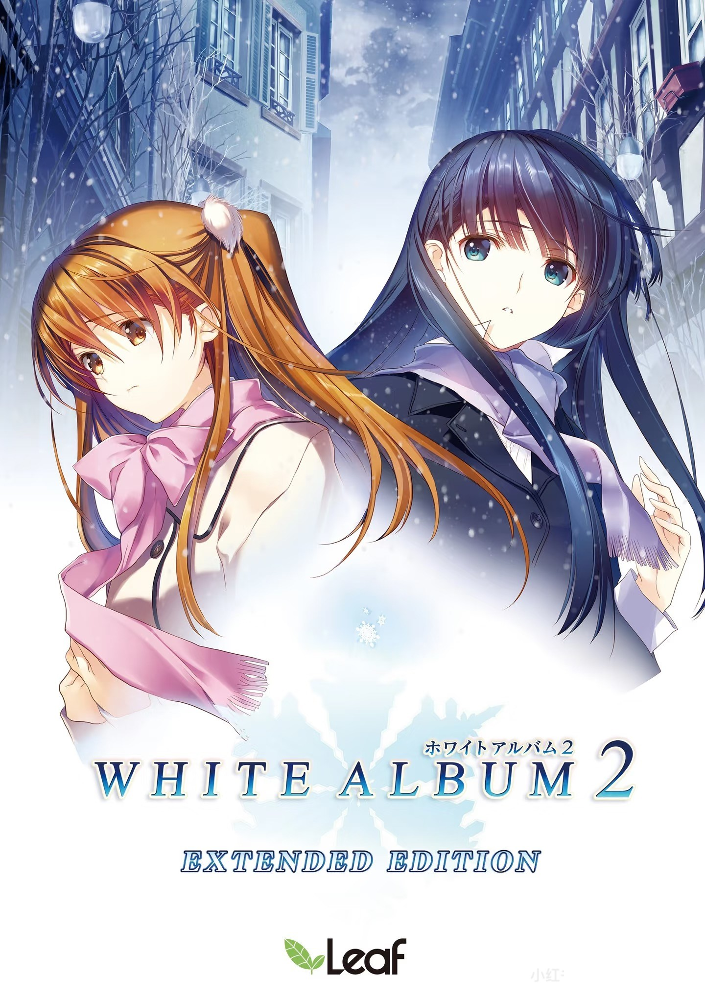

人生要是可以存档该多好啊，我们总是能够回到记忆里的重要节点，去挽回那些说错的话，做错的事以及…错过的人。
雨が降っている。静かに、ただ静かに。
忧郁蓝调
About
关于我
瓦双服赋能，CS魔王s，apex天榜猎杀，LOL峡谷之巅前五十，三角洲绝密3kd，ow 五百强，永劫无间天人百强。
我不要天赋了，我只想要爱。
Essays
随筆
人よ、幸福であれ！
人啊，幸福地活下去吧！
—— 素晴らしき日々 ～不連続存在～
Favorites
好きな作品

白色相簿 2
WHITE ALBUM 2
美好的每一天
素晴らしき日々
死亡筆記
DEATH NOTE
どうして、こうなるんだろう。
為什麼，會變成這樣呢。
—— WHITE ALBUM 2 ～closing chapter～
Works
作品 / 項目
作品名稱
簡短描述你的作品或項目
TAG作品名稱
簡短描述你的作品或項目
TAG作品名稱
簡短描述你的作品或項目
TAG還有什麼
等你來填充更多內容
TODOこの世界は腐っている。
—— 但我仍然想看看，這片天空的另一邊。
—— DEATH NOTE
Guestbook
留言板
Contact